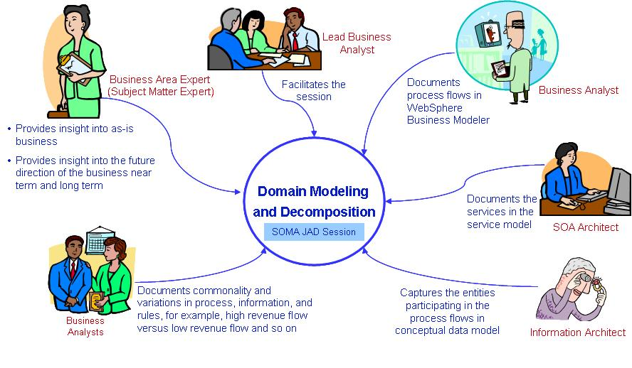

As a best practice we recommend that the Domain Modeling and Decomposition be conducted as a SOMA Joint Application
Development, or JAD, session where all the necessary Subject Matter Experts from the client side participate. Based on
our field experience, we have found oftentimes that we go after the same set of people from client side to gather bits
and pieces of information required for the analysis, hence we recommend, instead we conduct a SOMA JAD session where
all the required Subject Matter Experts are present. The participants and their responsibilities in such a SOMA JAD
session are: Lead Business Analyst facilitating the session; Business Area Expert or Subject Matter Expert providing
insight and detail about the as-is business and provides guidance on where the top leadership of the company is
steering the business near term and long term; Senior Business Analyst documenting process flows in tools such as
WebSphere Business Modeler or Microsoft Visio; SOA Architect documenting the services in the service model; Information
Architect capturing the entities participating in the process flows so that high level conceptual data model can be
developed; a Junior Business Analyst documenting commonalities and variations in process, information, and rules. For
example, high revenue flow versus low revenue flow and so on.
|